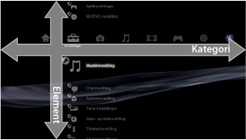
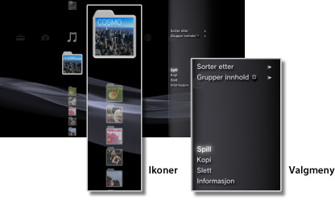
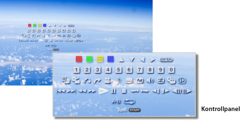

Om XMB™-menyen > Om XMB™ (XrossMediaBar)-menyen
Om XMB™ (XrossMediaBar)-menyen
Bruke XMB™-menyen
PS3™-systemet har et brukergrensesnitt kalt XMB™ (XrossMediaBar). De vannrette radene viser systemfunksjonene i kategorier, og de loddrette kolonnene viser elementer som kan utføres under hver kategori.

| Retningsknapper | Velg en kategori eller et element. |
|---|---|
 -knapp -knapp |
Bekreft det valgte elementet. |
 -knapp -knapp |
Avbryt en handling. |
 -knapp -knapp |
Vis innstillingsmenyen/kontrollpanelet. |
| PS-knapp | Vise XMB™-menyen |
Spille av innhold
Velg inneholdet på disken eller lagringsmediet fra XMB™-menyen, og trykk på -knappen. Trykk på -knappen for å stoppe avspillingen.
Tips
Med noen modeller av PS3™-systemet kan det hende at en passende USB-adapter (ikke inkludert) er nødvendig for å bruke lagringsmedia.
Informasjonspanel
Med informasjonspanelet som vises øverst til høyre på skjermen, kan du se informasjon som f.eks. antall venner som er online, varsel om nye meldinger og den siste informasjonen som er tilgjengelig under [What's New].

(1) |
Avatar * |
|---|---|
(2) |
Antall venner som er online * |
(3) |
Informasjon om ny tekstchat * |
(4) |
Informasjon om nye meldinger |
(5) |
Dato og tid |
(6) |
Opptatt-ikon |
(7) |
Informasjon tilgjengelig under [What's New]* |
* Vises kun når du er logget på PlayStation®Network.
Bruke innstillingsmenyen
Velg et ikon fra XMB™-menyen, og trykk på -knappen for å vise innstillingsmenyen. Alternativmenyen kan vises eller skjules ved å trykke på knappen.

Elementer på innstillingsmenyen
Elementene på innstillingsmenyen varierer avhengig av kategorien.
| Spill / Start / Vis | Spill av innhold. |
|---|---|
| Eject | Disc-utløser. |
| Slett | Slett innhold. |
| Kopi | Kopier innhold til harddisken eller til lagringsmedie.*1 |
| Informasjon | Vis informasjon om innholdet. Informasjon som navn kan endres. |
| Legg til Spilleliste | Legg innhold til en spilleliste. |
| Vis alle | Vis alle mapper som er lagret på lagringsmedie eller USB-masselagringsenhet.*1 |
| Sorter etter | Sorter innholdselementer etter navn, dato osv. |
| Grupper innhold | Endre grupperingsmetoden for å gruppere etter album, format eller andre alternativer.*2 |
| Slett flere | Velg flere innholdselementer, og slett alle samtidig. |
| Kopier flere | Velg flere innholdselementer, og kopier alle samtidig. |
| *1 |
Med noen modeller av PS3™-systemet kan det hende at en passende USB-adapter (ikke inkludert) er nødvendig for å bruke lagringsmedia. |
|---|---|
| *2 |
Innhold som ikke har informasjonen som er nødvendig for gruppering blir gruppert i en [Ukjent]-mappe. Noe innhold kan ikke grupperes. |
Bruke kontrollpanelet
Trykk på -knappen under avspilling av innhold for å vise kontrollpanelet. Kontrollpanelet kan vises eller skjules ved å trykke på -knappen. Elementene på kontrollpanelet varierer avhengig av innholdet som blir avspilt.

Bruke flere funksjoner samtidig
Brukere kan bruke flere funksjoner samtidig. Du kan for eksempel vise bilder med  (Foto) eller koble til Internett under
(Foto) eller koble til Internett under  (Nettverk) samtidig som du spiller av musikk med
(Nettverk) samtidig som du spiller av musikk med  (Musikk).
(Musikk).
Eksempel: Vise bilder under (Foto) mens du spiller av musikk med (Musikk)
1. |
Spill av musikk under |
|---|---|
2. |
Trykk på PS knappen. |
3. |
Velg bildene du vil vise, under |
Tips
- Du kan ikke spille av musikkinnhold (Musikk) med andre funksjoner når du spiller av Super Audio CD eller når
 (Innstillinger) >
(Innstillinger) >  (Musikkinnstilling) > [Output frekvens] er satt til [44.1 / 88.2 / 176.4 kHz].
(Musikkinnstilling) > [Output frekvens] er satt til [44.1 / 88.2 / 176.4 kHz]. - Det kan hende at noen funksjoner som vanligvis kan spilles av samtidig, ikke er tilgjengelig, avhengig av hvilken innholdstype som spilles av.
Merknad
Super Audio CD-er kan ikke spilles av på enkelte PS3™-systemer. For mer informasjon, se [Typer plater som kan spilles av].